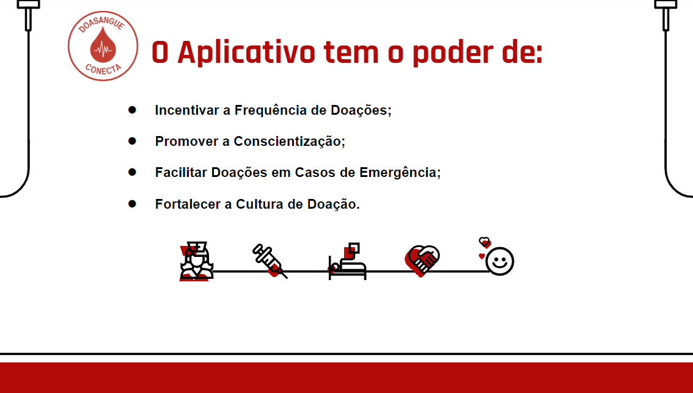
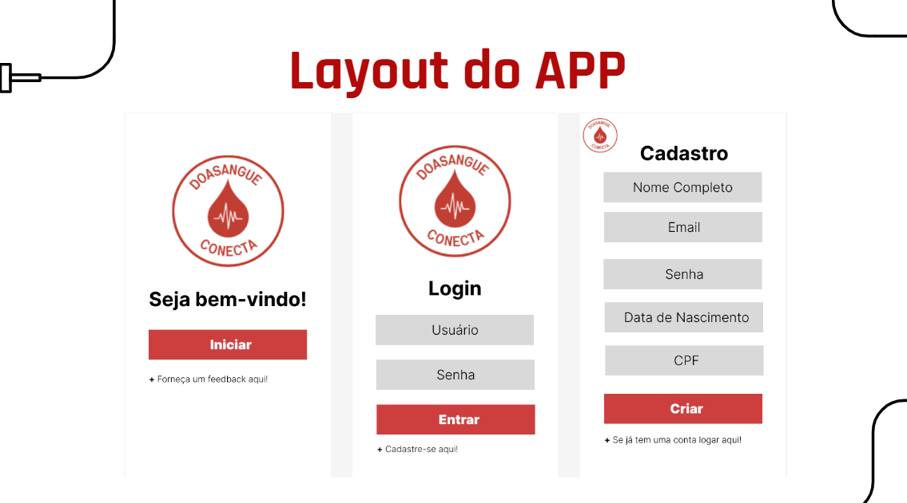
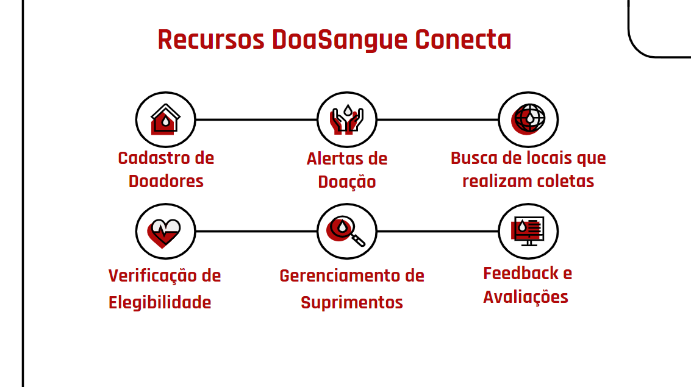
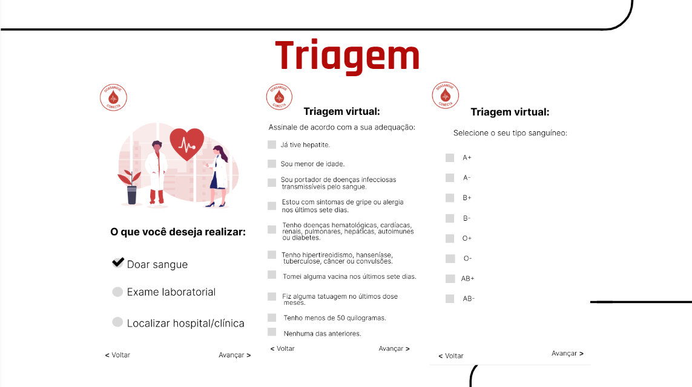
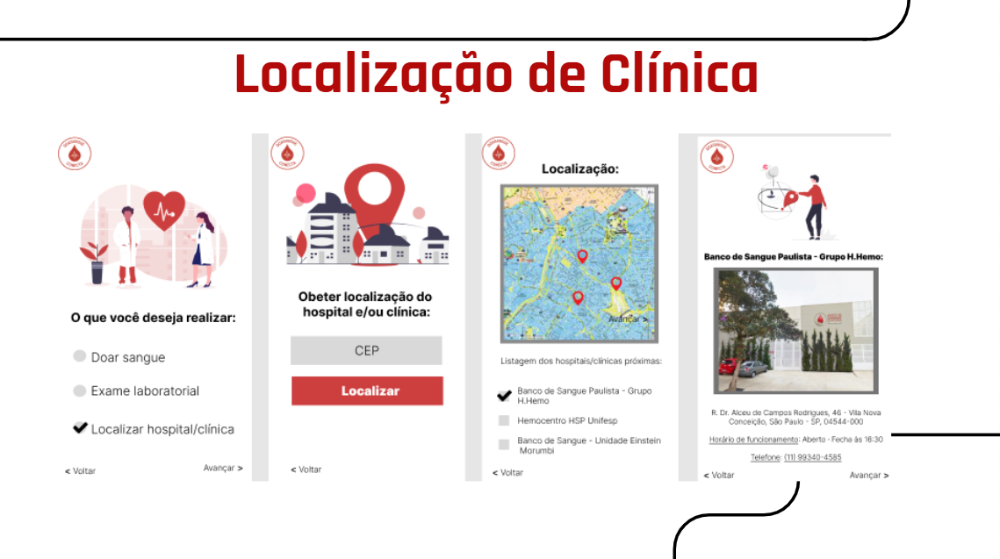
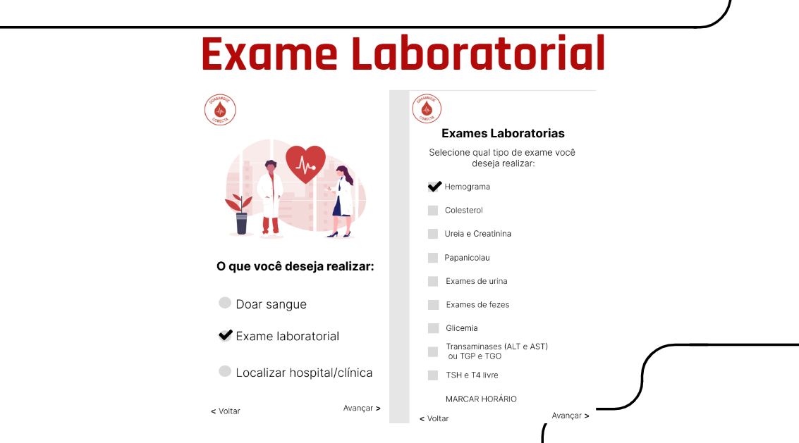

A análise das características e processos de serviço desempenha um papel crucial na compreensão e no aprimoramento de iniciativas de serviços, como o aplicativo "DoaSangue Conecta". Ao associar as características distintas dos serviços, como intangibilidade, inseparabilidade, variabilidade e caducidade, ao contexto do aplicativo, fica evidente como as interações entre doadores e o aplicativo desempenham um papel fundamental na entrega de valor.
Os processos de serviço, que incluem design, entrega, gerenciamento de qualidade, atendimento ao cliente e melhoria contínua, são essenciais para garantir que o aplicativo atenda às expectativas dos doadores, forneça informações precisas e atualizadas e promova uma experiência de alta qualidade. Além disso, a compreensão das características do serviço ajuda a identificar desafios específicos, como a variabilidade na qualidade da experiência do usuário, que podem ser envolvidos por meio de processos de melhoria contínua.

Análise
O projeto "DoaSangue Conecta" exemplifica como as características e processos de serviço são aplicados a um contexto específico. Ele fornece um serviço intangível, com interações inseparáveis entre o doador e o aplicativo, buscando garantir a qualidade e a relevância das informações e funcionalidades por meio de processos de design, entrega, gerenciamento da qualidade, atendimento ao cliente e melhoria contínua. Isso demonstra a importância de compreender e aplicar as características e processos de serviço para fornecer serviços de alta qualidade e atender às necessidades dos usuários. A análise das características e processos de serviço fornece insights importantes para aprimorar a eficácia do aplicativo, promover a doação de sangue e melhor atender às necessidades dos doadores e das instituições de saúde. Compreender as nuances dos serviços é fundamental para o sucesso de qualquer iniciativa centrada no cliente e contribuir para a entrega de serviços que sejam valiosos, eficazes e alinhados com as expectativas dos usuários.

Desenvolvimento do Sistema
Quando abordamos a questão do desenvolvimento do sistema de um projeto, estamos nos referindo a parte que interage diretamente com o usuário, onde ele irá depositar todos os dados necessários para que o nosso sistema possa transformá-los em informações úteis para a finalidade do software.
O papel principal do sistema, é facilitar o acesso à informação sobre pontos de coleta de sangue que estão próximos ao usuário. De acordo com todos os dados fornecidos pelo utilizador, uma filtragem será feita para que a informação se torne cada vez mais precisa e o serviço cada vez mais eficaz.

Sobre o App
Quando abordamos a questão do desenvolvimento do sistema de um projeto, estamos nos referindo a parte que interage diretamente com o usuário, onde ele irá depositar todos os dados necessários para que o nosso sistema possa transformá-los em informações úteis para a finalidade do software.
O papel principal do sistema, é facilitar o acesso à informação sobre pontos de coleta de sangue que estão próximos ao usuário. De acordo com todos os dados fornecidos pelo utilizador, uma filtragem será feita para que a informação se torne cada vez mais precisa e o serviço cada vez mais eficaz.

Continuação
Triagem e verificação de elegibilidade: Para saber se o usuário está apto ou não a realizar a doação de sangue, ele passará por uma triagem, onde fornecerá as informações necessárias para que de acordo com as normas de doação, saber com precisão se o usuário pode ou não doar sangue.

Finalização App
Fornecer a localização das clínicas: Após o tratamento dos dados do usuário, uma filtragem será feita de acordo com o CEP, para que as clínicas mais próximas ao doador sejam exibidas e apresentadas em forma de mapa, facilitando a localização dos pontos de coleta.
hr>

Finalização Layout
Exame Laboratorial: Dentro do aplicativo o usuário também poderá optar por realizar exames laboratoriais mais diversos.
Incentivar doações: Um painel informativo, onde serão publicados artigos para promover a conscientização e incentivar a doação de sangue.